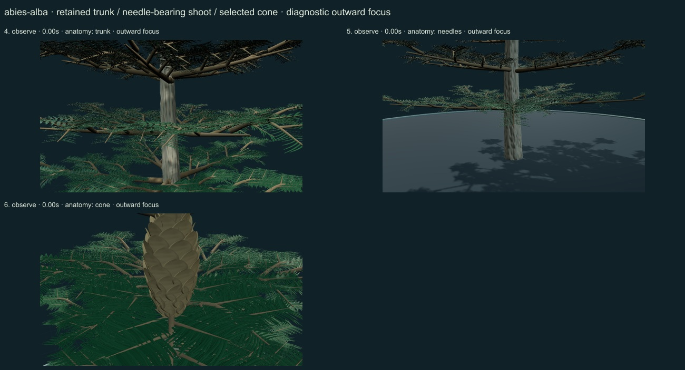
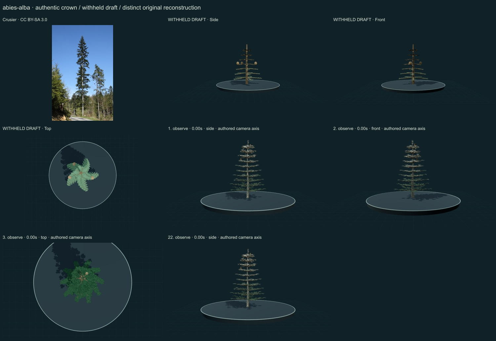
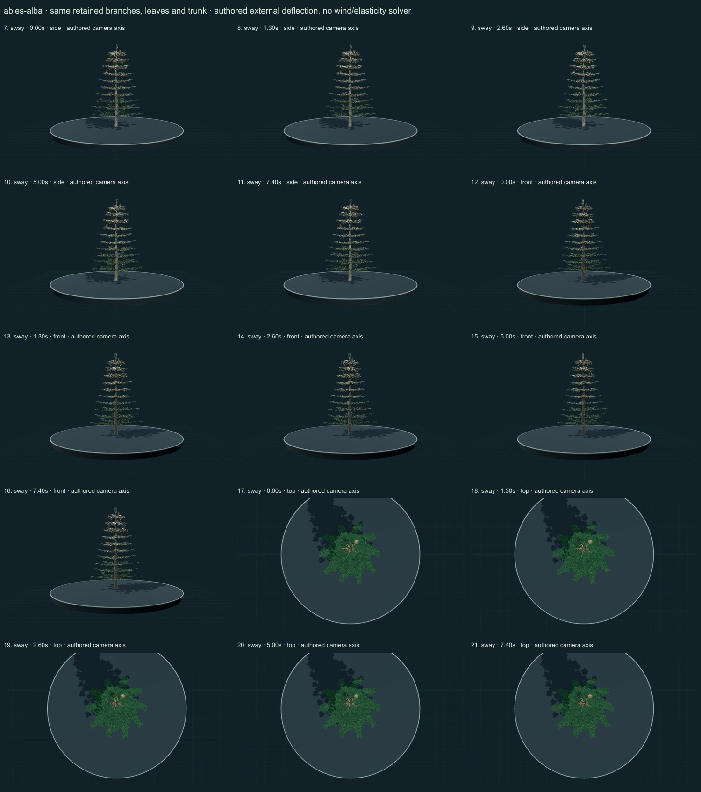

PhenoVoxel Archive · v0.6.23 · October 25, 2026
European silver fir
274 records after verified publication. 26 saved drafts remain held; 276 remain to 550, including 250 without a saved draft. Release register.
Selected actual university botanic-garden description read for grey bark, pectinate needle ranks with pale lower bands, rounded/notched tips and erect cylindrical cones with exserted/reflexed bracts. Garden accession origins are cultivated records, not verified native-range coordinates or independent determinations of this model. Selected actual university botanical-garden account accessed through web retrieval: erect seed cones disintegrate at maturity. This is distinguished from pine scale opening. Cone disintegration, winged-seed release and natural timing remain unavailable; the separate attempted local extraction-paper fetch returned HTML and is not claimed as a read PDF.
Crusier · CC BY-SA 3.0. Source-labelled real organism reference; preparation, life-stage, location and selected phenotype do not establish all species variation or measured 3D anatomy. Resized inside 1000 px, flattened and JPEG encoded; no generative alteration.
Exact creator, license, source/download/local checksums and access scopes remain in the data. Additional copyrighted institutional photographs and primary figures were consulted privately and linked, not redistributed or sampled into materials.
Original fir branching hierarchy, selected two-ranked flattened needle cues with pale lower bands, greyer continuous bark and upright narrow bracted cone studies. Cone-bearing upper shoot cues are more ascending; foliage arrangement varies with shoot context.
Original grey continuous bark, flattened darker green needle surfaces with pale lower-band cues and upright bracted woody cone studies. These are original numerical surfaces, not calibrated photographic textures.
Remaining: The whole crown retains conspicuous regular tiering and bright needle-edge aliasing in some views. Fine leaf tips, stomatal bands, bark relief and bract/scale anatomy remain idealized. Cone disintegration, seed release, measured foliage optics and a complete seed-to-tree developmental sequence remain unavailable.
The same trunk, branches, leaves and cones remain present. Working sway is small authored external branch deflection with anchored roots; no wind, stiffness, damping or physiological solver. Full cone maturation/release is explicitly unavailable. Full germination and organ-by-organ seed-to-tree development remain unavailable; the adult crown is not resized into a false developmental sequence.
Partly stylized original educational reconstructions. Fine morphology, age variation, tissue optics, dimensions and environmental mechanics remain incomplete or unmeasured. No independent specialist validation, scientific certification or accuracy percentage. Software checks and screenshots do not establish biological validity.
22 actual nonblank final viewer states inspected on 3 labelled sheets. Side/front/top are authored whole-crown camera axes; outward focus is a separate diagnostic view. Qualitative author review, not independent scientific certification.



Partly stylized original educational reconstructions. Fine morphology, age variation, tissue optics, dimensions and environmental mechanics remain incomplete or unmeasured. No independent specialist validation, scientific certification or accuracy percentage. Software checks and screenshots do not establish biological validity. Prior 270 species objects and original wolf/tiger meshes unchanged. Occurrences and cultivated accessions are not native-range boundaries. Legacy Protista/Monera are reporting conveniences.
Exact findings, sources and screenshot hashes